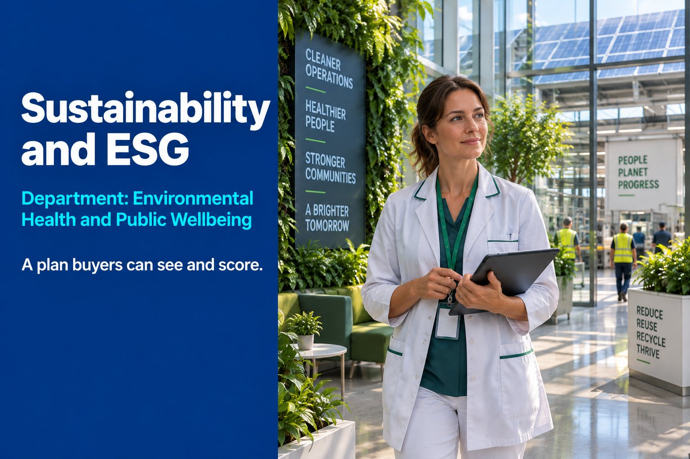

Carbon Reduction
A published Carbon Reduction Plan and Scope 1, 2 and 3 emissions measurement.

Department: Environmental Health and Public Wellbeing
A Carbon Reduction Plan has moved from nice-to-have to a scored, sometimes mandatory, requirement. Manufacturers without one are increasingly locked out before the technical evaluation even starts.
Without a published Carbon Reduction Plan, a buyer assumes no environmental measurement or accountability, social value answers are unsubstantiated, reputational risk from non-compliance with packaging or waste rules, a supplier behind the market on a now-standard requirement and weaker positioning against competitors who do publish one.
None of that may be true of you. It does not matter. In a tender, the assumption is what gets scored.
Most manufacturers think ESG is a paragraph on the website. Evaluators check whether the Carbon Reduction Plan is actually live, actually measured, and actually matches what the bid claims.
ESG is not reporting. It is evidence of how you actually behave.
A published Carbon Reduction Plan and Scope 1, 2 and 3 emissions measurement.
ISO 14001 alignment, waste management, energy efficiency and pollution prevention.
Packaging EPR, WEEE and RoHS obligations met and documented.
Sustainability evidence packaged and published where evaluators can actually find it.
| Tender criterion | What this service contributes | Score effect |
|---|---|---|
| ESG | Direct, primary scoring category | Major |
| Compliance | Carbon Reduction Plan is a stated requirement on many contracts | Major |
| Risk | Environmental non-compliance is a reputational and legal risk | Major |
| Quality | ISO 14001 evidence supports process maturity claims | Moderate |
| Innovation | Net zero and efficiency initiatives support innovation answers | Moderate |
Yes, for major central government contracts. Under PPN 006, suppliers bidding for central government contracts worth more than £5 million a year (including VAT), advertised on or after 24 February 2025, must provide one. NHS England has its own carbon requirements, and many councils and prime contractors now ask smaller suppliers for a plan too.
Your Scope 1 and Scope 2 emissions, a defined subset of Scope 3 emissions, a commitment to reach net zero by 2050 for your UK operations, and the measures you are taking to get there. PPN 006 says it should be updated at least annually, published and clearly signposted on your UK website, and signed off by a director.
Scope 1 is fuel you burn yourself, such as gas heating and company vehicles. Scope 2 is the electricity you buy. Scope 3 is everything else in your value chain. For a Carbon Reduction Plan, the Scope 3 part covers a defined set: upstream and downstream transport and distribution, waste from your operations, business travel and employee commuting.
Sources: PPN 006: Carbon Reduction Plans (GOV.UK)
Reviewed by Rob Atkins, Founder & Principal Consultant, Your Best Solution Limited. Last updated .